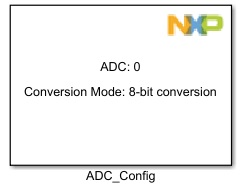
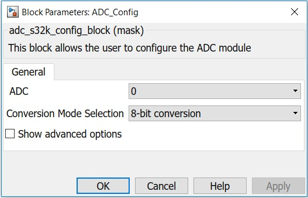
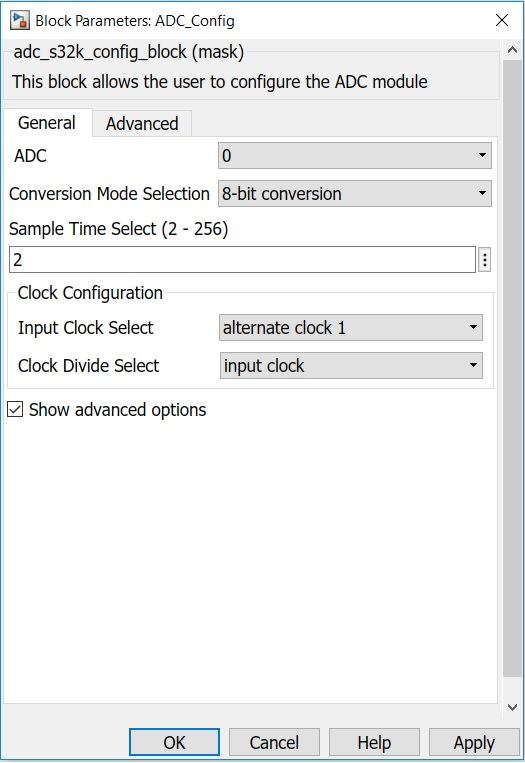
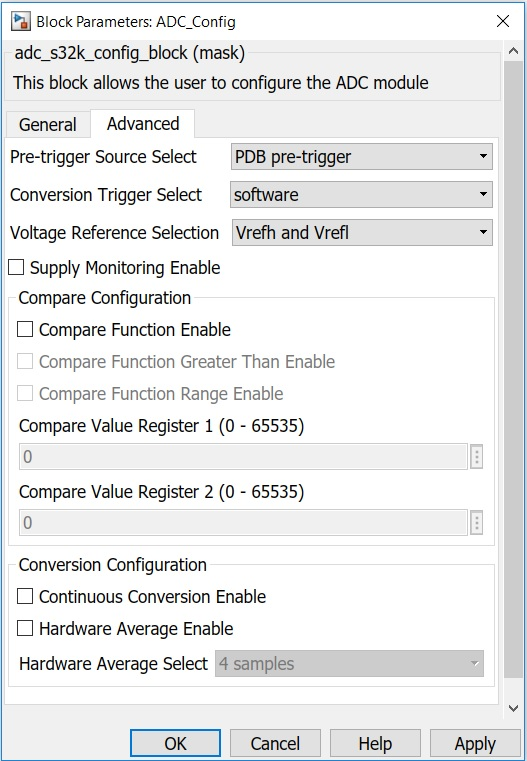

ADC Configuration Block
This block is used to configure the parameters of the ADC.
Block Image
Inputs:
- None
Outputs:
- None
Parameters and Dialog Box
The block dialog consists of the following tabs:
General
The General tab contains the following parameters:
ADC converter number
Selects the ADC converter number.
Conversion Mode Selection
Selects the ADC resolution mode.
- 8-bit conversion
- 10-bit conversion
- 12-bit conversion
Show advanced options
Shows or hides the Advanced options.
Sample Time Select (2 - 256)
Selects a sample time of 2 to 256 ADCK clock cycles. The value written to this register is the desired sample time minus 1. A sample time of 1 is not supported. Allows higher impedance inputs to be accurately sampled or to maximize conversion speed for lower impedance inputs. Longer sample times can also be used to lower overall power consumption when continuous conversions are enabled if high conversion rates are not required.
Input Clock Select
Selects the input clock source to generate the internal clock, ADCK.
Clock Divide Select
Selects the divide ratio used by the ADC to generate the internal clock ADCK.
- input clock
- input clock / 2
- input clock / 4
- input clock / 8
Advanced
This tab is part of Advanced options and it contains the following parameters:
Pre-trigger Source Select
Selects pre-trigger source for ADC.
- PDB pre-trigger
- TRGMUX pre-trigger
- Software pre-trigger
Software Pre-trigger Source
It is visible when software pre-trigger source is selected and it selects pre-trigger source for ADC.
- Software pre-trigger 0
- Software pre-trigger 1
- Software pre-trigger 2
- Software pre-trigger 3
Conversion Trigger Select
Selects the type of trigger used for initiating a conversion. Two types of trigger are selectable:
- software
- hardware
When software trigger is selected, a conversion is initiated following a write to SC1A.
When hardware trigger is selected, a conversion is initiated following the assertion of the ADHWT input after a pulse of the ADHWTSn input.
Voltage Reference Selection
Selects the voltage reference source used for conversions.
- Vrefh and Vrefl
- Valth and Valtl
Supply Monitoring Enable
Enable it for measuring internal supply (e.g.: VDD,VDD_LV, etc).
Note:Only ADC0 (measured internally via internal input channel 0).
Compare Function Enable
Enables the compare function.
Compare Function Greater Than Enable
Configures the compare function to check the conversion result relative to the CV1 and CV2 based upon the value of ACREN. ACFE must be set for ACFGT to have any effect.
- Unchecked - Configures less than threshold, outside range not inclusive and inside range not inclusive; functionality based on the values placed in CV1 and CV2.
- Checked - Configures greater than or equal to threshold, outside and inside ranges inclusive; functionality based on the values placed in CV1 and CV2.
Compare Function Range Enable
Configures the compare function to check if the conversion result of the input being monitored is either between or outside the range formed by CV1 and CV2 determined by the value of ACFGT. ACFE must be set for ACFGT to have any effect.
- Unchecked - Range function disabled. Only CV1 is compared.
- Checked - Range function enabled. Both CV1 and CV2 are compared.
Compare Value Register 1 (0 - 65535)
Contains a compare value used to compare the conversion result when the compare function is enabled.
Compare Value Register 2 (0 - 65535)
Contains a compare value used to compare the conversion result when the compare function is enabled.
Continuous Conversion Enable
- Unchecked - One conversion or one set of conversions if the hardware average function is enabled, that is, AVGE=1, after initiating a conversion.
- Checked - Continuous conversions or sets of conversions if the hardware average function is enabled, that is, AVGE=1, after initiating a conversion.
Hardware Average Enable
Enables the hardware average function of the ADC.
Hardware Average Select
Determines how many ADC conversions will be averaged to create the ADC average result.
- 4 samples
- 8 samples
- 16 samples
- 32 samples
Block Dependency
- None
Block Miscellaneous Details
- None
* Read Hardware Manual documentation to get more information.